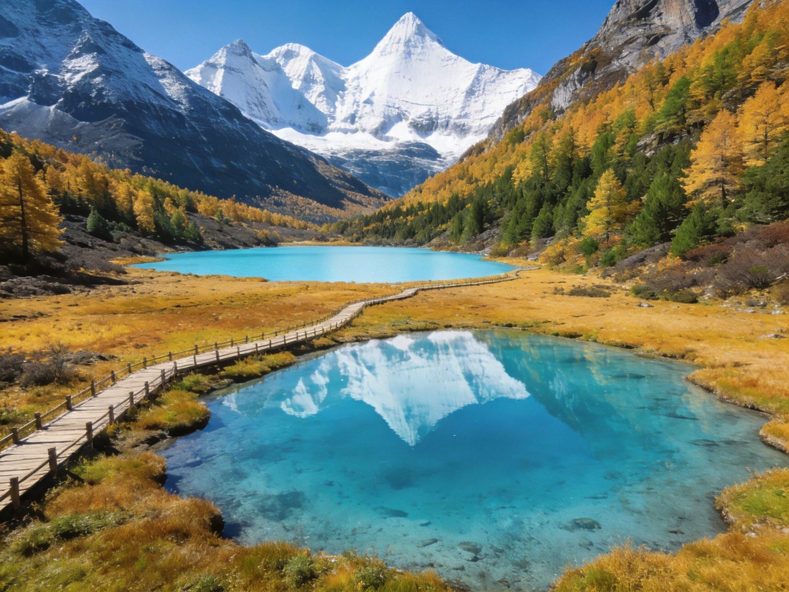
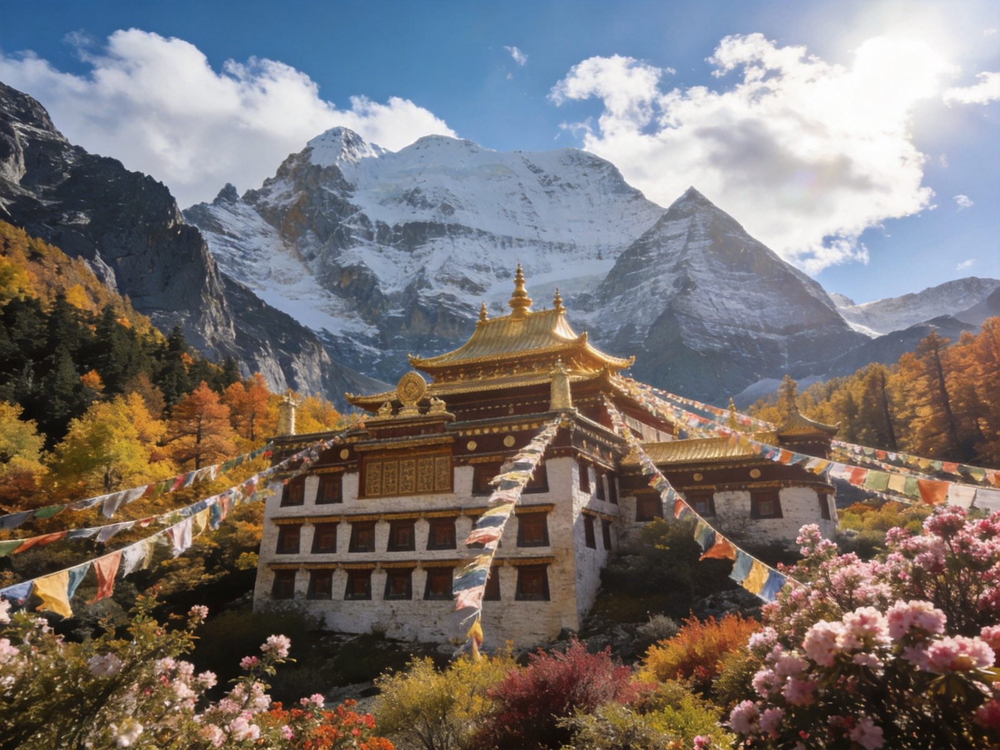
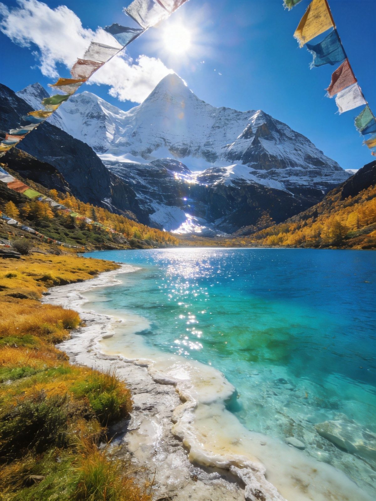

🏔️ 稻城亚丁 · YADING NATURE RESERVE
稻城亚丁 · 蓝色星球最后一片净土全攻略
四川稻城的「香格里拉之魂」，被英国探险家希尔顿笔下称为「最后的香格里拉」。三座海拔 4000 米以上的神山——仙乃日、央迈勇、夏诺多吉并立，脚下是牛奶海、五色海、珍珠海等雪山圣湖，自然纯净得不像人间。每日限流 1.5 万人、必须实名预约；2026 年 8.1–10.31 曾推免门票政策，抢得到就是捡漏。本文含短线/长线双方案、三神山攻略、交通住宿、美食预算、避坑全讲清。
📍 目的地：四川甘孜 · 稻城县
👥 1–6 人自由行
⏱️ 1 日 / 2 日 双方案
💰 原价146 · 免票期看公告
🏔️短线 1 日 · 适应版
核心策略：只走「扎灌崩→冲古寺→珍珠海」的省力短线，轻松看神山圣湖，适合首进高原、时间紧或想先适应海拔的游客。
👥 亲子/首进高原适配：短线单程约 2.3km、海拔 3900–4100 米，栈道平缓、体力消耗小，是带家人看神山最稳妥的选择。
🗺️ 行程安排
-
上午 · 扎灌崩 → 冲古寺 → 珍珠海
🛺 景区观光车到扎灌崩💧 冲古寺（藏传佛教名刹）
🏔️ 珍珠海（距冲古寺步行约20–30min）
⚠️ 珍珠海又叫「卓玛拉措」，是拍摄仙乃日雪山倒影的最佳机位，清晨湖面平静、倒影最清晰。
-
下午 · 洛绒牛场观景（可选电瓶车）
🛺 冲古寺坐电瓶车到洛绒牛场（约7km）🐎 高山草甸看央迈勇/夏诺多吉
💡 洛绒牛场是观赏央迈勇雪山的最佳视角，草甸牦牛雪山同框，出片极佳；体力好可稍作停留返回。
-
傍晚 · 出景区返回
🚌 17:00 前乘观光车返回景区入口
💡 短线半天可轻松走完，下午若时间充裕可加长线段的洛绒牛场，但千万别贪多导致高反。
❄️长线 2 日 · 深度版
核心策略：第一天短线适应+看神山，第二天冲长线冲古寺→洛绒牛场→牛奶海→五色海，把稻城亚丁的灵魂一次看透。
👥 体力好的青年适配：长线往返徒步约 10km、最高海拔 4600 米，对体力与高反耐力要求高，量力而行、务必结伴。
🗺️ 行程安排
-
DAY 1 · 短线适应 + 神山初识
💧 冲古寺·珍珠海（看仙乃日倒影）🏔️ 洛绒牛场看央迈勇/夏诺多吉
💡 住香格里拉镇（日瓦）海拔约 2900 米，适应一晚再走长线，高反风险更低；别住景区内高海拔营地。
-
DAY 2 · 长线冲顶（牛奶海 → 五色海）
🛺 观光车到扎灌崩🛺 电瓶车到洛绒牛场
🥾 徒步约6–8h：洛绒牛场→牛奶海→五色海
⚠️ 牛奶海海拔约4500、五色海约4700；可骑马到洛绒牛场前段省力，后半段必须徒步，备好氧气瓶与干粮。
-
DAY 3（可选）· 稻城周边/返程
🚗 稻城亚丁机场（世界海拔最高民用机场）或返成都
💡 时间充裕可顺游稻城白塔、傍河、海子山古冰川，或搭车走川西环线衔接四姑娘山、色达。
⭐稻城亚丁核心景点 · 单独详览
把最出名的三神山与三个圣湖单独拎出来说清楚——值不值得去、怎么玩、在哪条线。

仙乃日雪山 · 海拔6032米
三神山之首
仙乃日 · 藏语「观世音菩萨」
三神山中海拔最高的仙乃日（6032米），形似端坐的大佛，藏语意为「观世音菩萨」。它是稻城亚丁的标志性雪山，珍珠海边的观景台能将雪山倒影一同收入镜头，气场十足。
👍 必去理由：短线可见。冲古寺后沿栈道向珍珠海方向走，雪山始终在正前方，随手拍都是屏保级画面。

洛绒牛场 · 神山下的草甸
雪山草甸
洛绒牛场 · 看央迈勇的最佳视角
被央迈勇、夏诺多吉两座雪山环抱的高山草甸，是稻城亚丁最上镜的打卡地之一。牦牛在花海草甸间漫步，背景是连绵冰川雪山，长线徒步的起点正设于此。
👍 必去理由：冲古寺坐电瓶车约 20 分钟可达，往返省时省力；草甸+雪山+牦牛三重元素同框，吸睛度满分。

牛奶海 · 长线终点之一
长线
牛奶海 · 蓝色星球最后一片净土
海拔约 4500 米的雪山湖泊，湖水在阳光照射下呈现清透的乳蓝，与雪峰、倒影组成「蓝色星球最后一片净土」的经典画面。靠近湖岸的部分水域带乳白色，因而得名「牛奶海」。
👍 必去理由：长线灵魂终点之一。从洛绒牛场徒步约 3–4 小时可达，高反明显时建议此行止步于此。
五色海 · 长线终极目的地
长线
五色海 · 藏地圣湖
稻城亚丁海拔最高的湖泊（约4700米），在藏传佛教中被视为圣湖。湖水在一天中随光线变幻出蓝、绿、黄等多种色彩，故名五色海。它位于牛奶海之上约 300 米，登顶后视野极佳。
👍 必去理由：长线终极打卡点。牛奶海到五色海需再爬一小段，登顶俯瞰双湖与雪山，是全程最震撼的回报。
冲古寺 · 短线人文点
人文
冲古寺 · 藏传佛教名刹
坐落于仙乃日雪山脚下的古老藏传佛教寺庙，红墙金顶与雪山森林相映，是短线游的核心起点。寺庙四周经幡飘动、梵音袅袅，是感受藏地信仰与人文气息的最佳之处。
👍 必去理由：短线必经。从扎灌崩下车后第一站，适合静心参观、拍雪山与寺庙同框的画面。
🚗怎么去：飞机 vs 大巴 vs 自驾 vs 拼车
稻城亚丁地处高原，交通相对单一但可选项不少；合理安排进山方式能省不少体力。
稻城亚丁飞机/大巴/自驾/拼车四种交通方式对比
| 方式 | ✈️ 飞机 | 🚌 大巴 | 🚗 自驾 | 🚐 拼车/包车 |
|---|
| 时长/成本 |
成都直飞稻城亚丁机场约 1.2h（世界海拔最高民用机场）+ 机场大巴约 2h |
成都新南门/康定至稻城，车程约 15–20h（途经理塘） |
成都经 318 国道理塘约 900km，约 2–3 天 |
成都/康定拼车次日达，约 300–500 元/人 |
|---|
| 适合人群 |
✔ 最省体力：远距离直达，适合高反敏感/时间紧 |
预算型长途，时间充裕 |
自驾环线、喜欢边走边看 |
想省心、无自驾的多人结伴 |
|---|
| 注意 |
机场海拔 4411 米极罕见，落地即高海拔，慢行防高反 |
长途颠簸疲劳、易高反 |
山路弯多耗时长，需2人换开 |
节假日价格上浮、需提前约 |
|---|
| 💡 一句话建议：时间紧选 飞机（最省体力）；喜欢川西自驾氛围选 318国道自驾顺路串起稻城；多人结伴拼车性价比高。 |
|---|
📱 抢票与预约：通过微信小程序「稻城亚丁」/官方公众号实名预约，景区不设现场售票；每日限流 1.5 万人，旺季常满员；免门票期见景区公告，观光车（120元）+电瓶车（80元）按需购买。
🏨住宿推荐
住宿集中在香格里拉镇（日瓦）与稻城县城，三档价位供参考（2 人房计）。
经济型
香格里拉镇经济客栈
约 120–250 元/晚 · 人均 60–125
离景区入口近、吃饭方便，海拔约 2900 米适合适应，性价比高。
中端舒适
精品藏式民宿
约 280–450 元/晚 · 人均 140–225
藏式风格、供氧房可选，早起入园方便，适合追求舒适与便利的自由行。
高端体验
观景度假酒店
约 500–1200 元/晚 · 人均 250–600
推窗见雪山/江景的度假酒店多在稻城县或镇郊，旺季需提前抢订。
🍜稻城亚丁必吃清单
藏区高原风味为主，稻城县与香格里拉镇餐厅都能尝到，按人数点即可。
1牦牛肉汤锅 / 手抓牦牛肉甘孜藏区招牌 · 暖胃扎实
约 80–150 元
💰预算对比（人均）
含 1–3 人出行说明；区间为保守–宽松，实际以淡旺季与选择为准。
稻城亚丁短线与长线方案人均预算对比
| 项目 | 短线1日版 | 长线2日版 |
|---|
| 大交通（成都往返人均） | 约 400–900 | 约 400–900 |
|---|
| 门票+观光车（按原价） | 146+120=266 | 146+120+电瓶车80=346 |
|---|
| 住宿 | —（当日往返可选） | 1–2 晚 120–450 |
|---|
| 餐饮 | 约 60–120 | 约 150–300 |
|---|
| 景区内/接驳 | 约 30–80 | 约 80–200 |
|---|
| 合计 · 人均 | 约 700–1400 | 约 1000–1900 |
|---|
💡 省法：关注官方免门票/优惠票政策（2026.8.1–10.31 曾全免门票）；学生、60岁以上等证件半价；3–4 人拼车拼房人均更省；避开国庆等大假日。
🧭避坑 & 实用贴士
- 必须预约：稻城亚丁不设现场售票，每日限流 1.5 万人，务必提前通过「稻城亚丁」官方小程序实名预约，旺季提前 7–15 天，免票期更要抢早。
- 高反是头等大事：景区平均海拔 4000+ 米，初上高原不剧烈运动、不立刻洗澡喝酒；备红景天、氧气瓶、布洛芬，严重高反立刻下撤低海拔（香格里拉镇）。
- 长线量力而行：牛奶海五色海海拔 4500–4700 米、往返徒步约 6–8h，体力差或有高反史建议只走短线，别硬撑伤身。
- 观光车+电瓶车组合：景区入口到扎灌崩坐观光车，冲古寺到洛绒牛场坐电瓶车，能省下大量体力用于核心徒步段。
- 看天气选时机：想看清雪山湖泊选 9–10 月（晴天多、彩林金黄）；雨季云厚遮挡神山，且山路易塌方。
- 住宿优先低海拔：住香格里拉镇（日瓦，约2900米）比住景区内高海拔营地更利于适应，能显著降低高反风险。